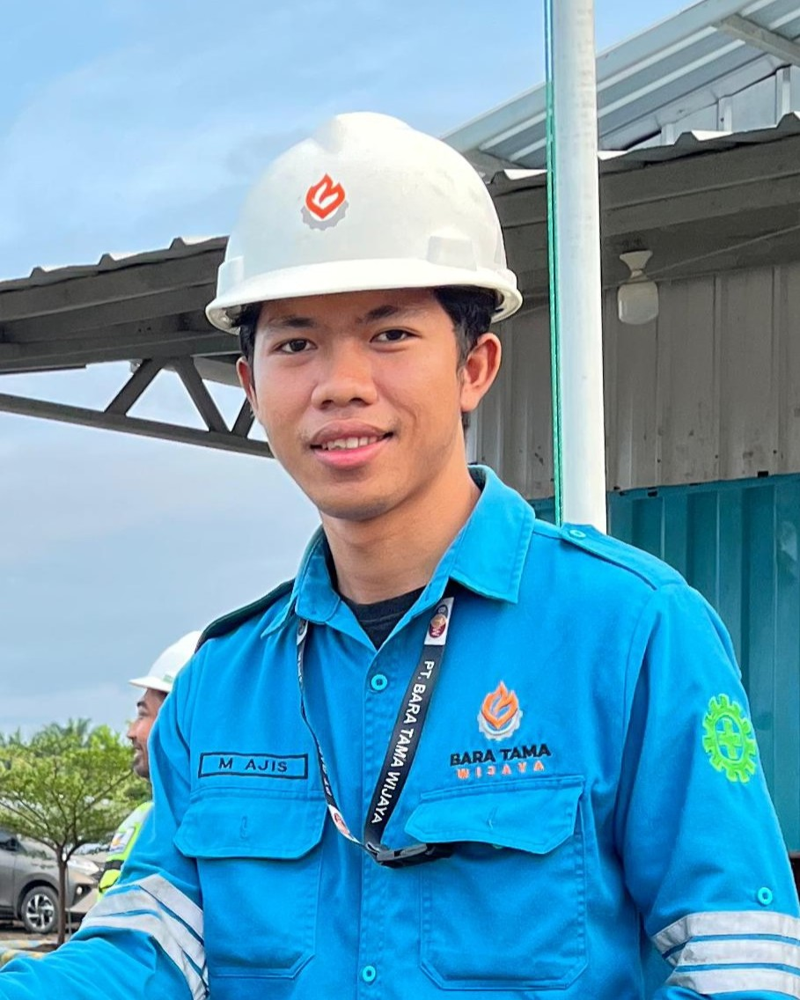
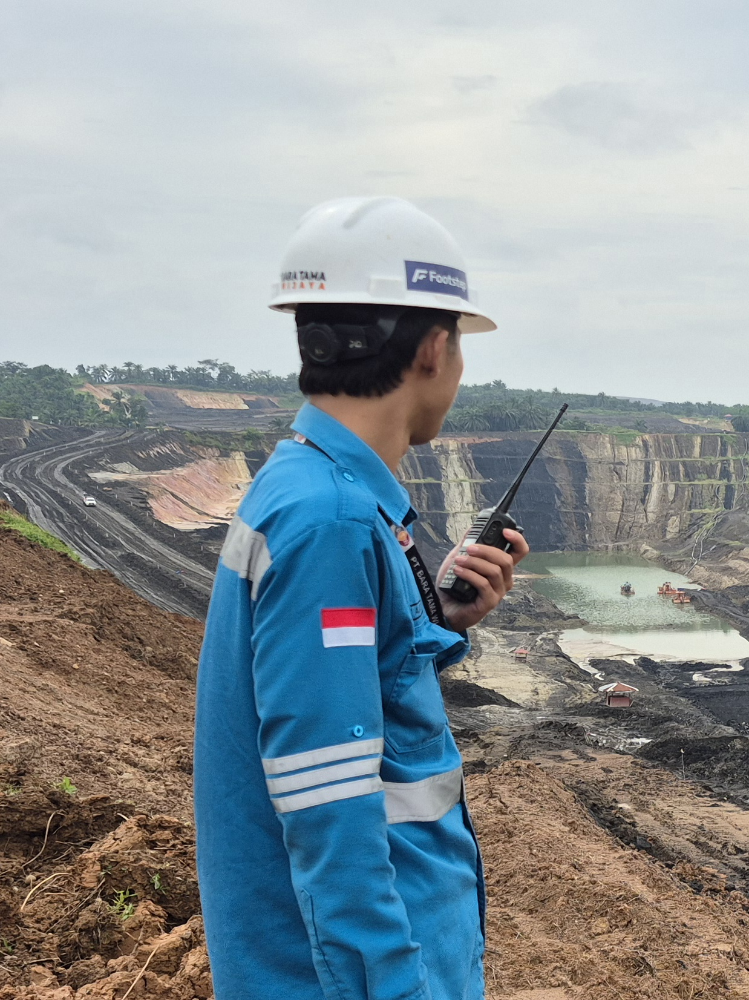
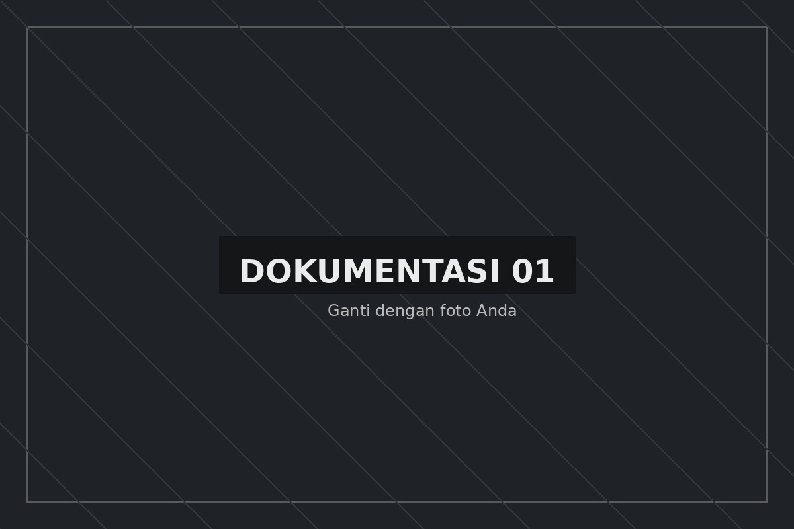
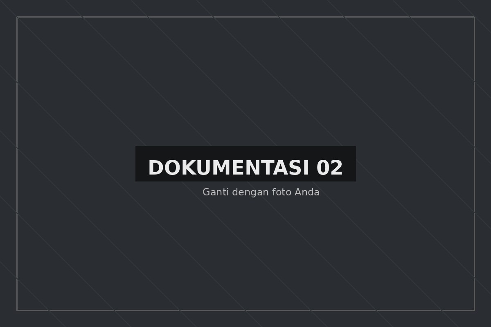
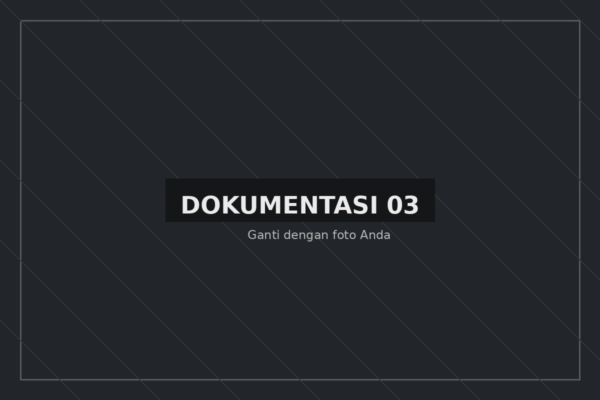
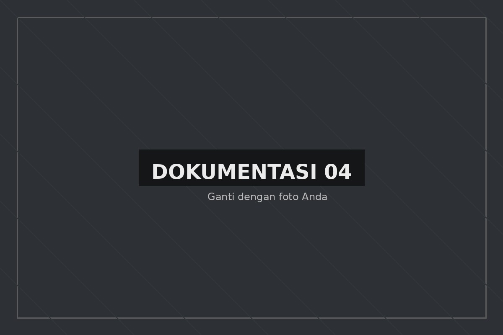

Profesional di bidang operasional pertambangan dengan pengalaman sebagai Dispatcher dan Monitoring Control. Terbiasa menangani monitoring operasional, data produksi, reporting, serta koordinasi lapangan, didukung kompetensi Ahli K3 Umum.


Saya memiliki pengalaman di operasional pertambangan dengan pekerjaan yang banyak berkaitan dengan monitoring unit, data produksi dan reporting.
Pengalaman sebagai Dispatcher membiasakan saya bekerja dengan HM, KM, breakdown unit dan ritase produksi. Saat ini pengalaman tersebut berkembang ke fungsi Monitoring Control dengan fokus pada monitoring dan validasi data operasional.
Saya juga memiliki kompetensi Ahli K3 Umum sebagai pendukung dalam memahami risiko kerja dan penerapan keselamatan dalam kegiatan operasional.
Memantau aktivitas unit dan kondisi operasional.
Mengolah dan memeriksa informasi operasional.
Berkomunikasi dengan tim terkait selama operasional.
Memahami risiko kerja dan penerapan prinsip K3.
Pengalaman yang membentuk pemahaman saya terhadap data, unit dan aktivitas operasional pertambangan.
Melakukan monitoring aktivitas operasional dan mengikuti perkembangan kondisi produksi.
Mengolah serta memeriksa data untuk kebutuhan monitoring dan reporting.
Menyiapkan informasi operasional dan berkoordinasi dengan pihak terkait ketika terdapat perubahan atau kendala.
Melakukan input HM dan KM alat berat berdasarkan aktivitas setiap shift.
Mencatat unit breakdown serta melakukan monitoring aktivitas unit dan ritase produksi.
Memeriksa kesesuaian data dan berkoordinasi dengan supervisor apabila ditemukan perbedaan informasi.
Beberapa dokumentasi dari lingkungan kerja dan aktivitas operasional.

Aktivitas monitoring kegiatan operasional.

Lingkungan kerja pertambangan.

Dokumentasi kegiatan di lingkungan kerja.

Aktivitas dalam kegiatan operasional pertambangan.
Kemampuan yang mendukung pekerjaan dalam operasional, monitoring dan pengolahan data.
Kompetensi K3 yang mendukung pemahaman saya terhadap keselamatan dalam kegiatan operasional.
Memahami proses identifikasi potensi bahaya dan risiko dalam aktivitas kerja.
Memahami pentingnya SOP dan ketentuan keselamatan dalam pelaksanaan pekerjaan.
Memperhatikan aspek keselamatan ketika melakukan monitoring aktivitas dan kondisi operasional.
Memahami pentingnya menyampaikan kondisi tidak aman dan potensi risiko kepada pihak terkait.
Untuk komunikasi profesional atau diskusi mengenai pekerjaan di bidang pertambangan dan operasional.